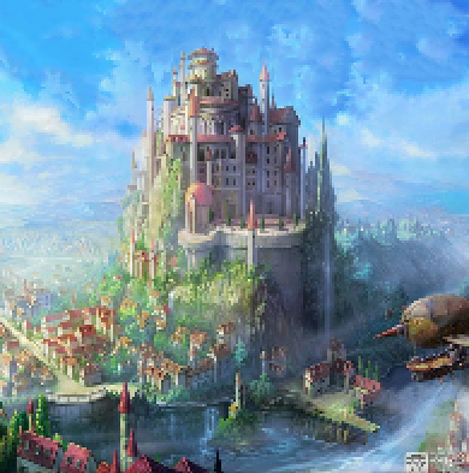
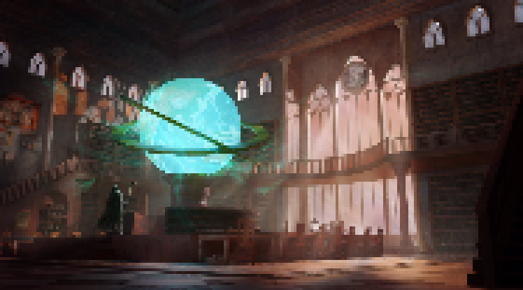
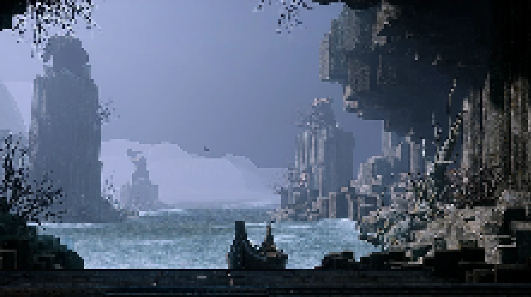
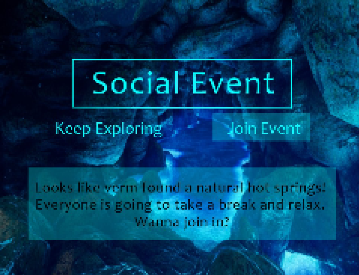
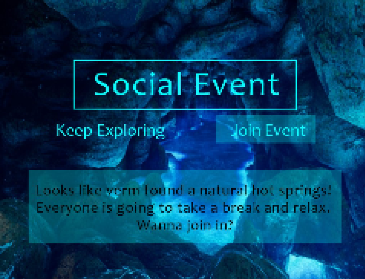

Welcome to the official Magna Ruina Website! Magna Ruina is a pixel dating RPG that takes place in the fantasy world of Aiio. To learn about this upcoming games characters, story, current devlopment and more! For more information on characters in Magna Ruina, visit here! to learn about the creator, the devlopment of the game so far, and how to contact us, visit here! You can also navigate to each page using the sigils above.
Introduction
“Aiio is on the brink of a major catastrophe… again. It's up to me and the Slividian spelunkers to prevent the event known as “the collapse” that all of us experienced 19 years ago. The major earthquake and tsunami destroyed everything from villages to empires, from the Strönd coast to the highest peaks of Kiligra. A small group of nobles from the college of Aleanbar discovered small signs of seismic activity that predict the exact same event will happen, and soon. The Slividian spelunkers were forged to investigate the seismic activity to try and learn if there is any way to prevent this from happening again, and to learn why this event occurred in the first place…”
Project Overview
Ne Terrae is an interactive story game that has a focal point on your choices. The game will end differently depending on who you trust, who you befriend, and what choices you make in your run. Explore the land of Aiio and its history as you discover the roots of the disaster that scarred you and everyone in the Slividian spelunkers. With Ne Terrae's advanced character building, you have the option to feel a bit more immersed by giving your character a unique backstory that comes with its own obstacles. Connect with the characters over your shared experiences, and help them heal as you learn to heal as well. Or romance someone in the group and get down and dirty in these ancient caves!
Parameters:
In order to make this game a reality, I would need a coding program, time, art, voice actors, and animators. This would be a fairly simple game, but it wouldn't be a simple code because of how many possible endings there will be.
Game Features:
Customizable main character- appearance, gender, pronouns, sexuality, and their fantasy race: elf, cat-person, demon, etc.
Choose from a selection of backstories that affect how your character responds in a variety of situations. (See character information for more details.)
Know your 5 party members and potentially romance and befriend them. Or you could even play matchmaker!
Experience various events and minigames that unveil the secrets of Aiio and your party.
Puzzle games (example: Legenda of Zelda: Breath of the Wild, Pokemon Diamond/Pearl/Platinum)
Exploring the vast caves of Aiio and experiencing a variety of events. (example: Rune Factory 4)
Other Game Features include:
Social events that affect
your friendships with party
members. (example: Rune
Factory 4, my own graphic
design seen above)
Collect items that can be gifted to your party and various other artifacts that contribute to the secrets of Aiio.
Various fully animated (and voice-acted) cutscenes of important story events.
Experience 5 endings and their variations depending on the backstory and personality of your character and the relationships you have with your party.
World Building
Aiio is a fantasy world that takes place in a time before electronics or modern conveniences. Magic is the driving force that keeps society advancing, but with few magic users and dwindling sources of energy, magic is more rare and valuable than in other fantasy games. Aiio is an incredibly large continent that takes up a little less than half the entire planet, the only other continent is a scattered island on the other side of the globe, known as the Jeji islands.
Locations
The capital of Aiio, Syo, is a very large, wealthy and bustling city. The collapse only affected the outskirts because of the incredibly strong infrastructure of the capitol, but smaller off-cities were completely obliterated without this support.

Kiligra is home to the largest stretch of mountains in Aiio; the Daybreak Mountain range. The ridge is also snowy, no matter what time of the year. People that come from Kiligra are often secluded, there only being a few minor villages in the Alps. The collapse caused large-scale avalanches in these mountains.
Slividia is home to the entry point of the cave systems, located deep in the forest. The collapse uprooted trees, disrupted rivers, and ultimately permanently altered the environment. However, time healed this forest scape and while it will never look like what it used to, nature has made Slivida feel completely healed.
Aleanbar is a sub-city of Syo that is mostly known for its prestigious college of scholars and researchers. Aleanbar was the first city to be completely reconstructed after the collapse- but the college's reconstruction was only finalized 3 years ago.

Farlands are the plains, which (as you can guess) are very far away from Syo and the other major cities in Aiio. The main trade in the farlands is crops, because of the large farming community that lives in these flat plains. The collapse did cause a minor earthquake, but because the farlands are closest to the Strönd coast, the tsunami turned into a tornado and ripped the crops and structures from the earth, as well as flooding parts of this region.
The Strönd is the coastlines of Aiio-all of them. The strönd was affected by a tsunami that followed the minor earthquakes the collapse caused. It was completely destroyed in the collapse, and only small parts of the Strönd were rebuilt- like Cuan, the major fisherman city and docks that welcomed visitors from the Jeji islands.
The Jeji Islands are located on the other side of the globe, the only other 'continent' in the world. Aiio and Jeji have had political tensions, but for the most part, have not waged major threats on each other over these tensions. The islands were only affected by the collapse briefly with much higher tides, but this subsided in about a half-year.

Back Story
My inspiration for this game comes from a lot of sources, most of which I am showing you their own art. Genshin impacts 'chasm' map/arc is one of the biggest sources of inspiration for this game. The chasm is an extremely deep and intricate cave system that contains exciting plant life, ancient underground cities, mysterious enemies, and plenty more. The aesthetics of the chasm inspired my game's setting, but the history and overall plot of the chasm are quite separate from Ne Terrea.
Another source of inspiration is from the animated Netflix reboot of “She-Ra and the princesses of power”. The history and fantasy aspects of this show are referenced a lot in my ideas for this game. In this world, Etheria is at war magic vs military. The war has affected all of the young adult characters in different ways, and each of them grows through their trauma and heals differently. I can only hope my game would portray character development like this show.
Skyrim is my inspiration for worldbuilding, I want my game to immerse my player base into the fantasy and role-play aspects of the game. Skyrim does an excellent job of making a fully fleshed-out fantasy universe that emphasizes character creation- and I want my players to feel this as well. Completely immersed in the world with a fully customizable character they play as.
Smaller inspirations like Saint spells guides inspired smaller parts of Ne Terrea. Saint spells guide is an interactive fantasy game that has an emphasis on romancing the characters. Your choices matter in this game as well and dictate whether your romance works out or not. But there isn't a major overarching plot, it's more just like a fun dating simulator for fantasy magic college students. I really love this game though, it has a beautiful aesthetic and the characters are really charming- I hope the characters in my game will feel as challenging to romance and befriend as this game made it. The choices you make really really matter, and I hope that urgency is felt in Ne Terrea.
Thank you for reading the home page! To visit the character website or our Development site please click on the sigils at the beginning of the page!


 
